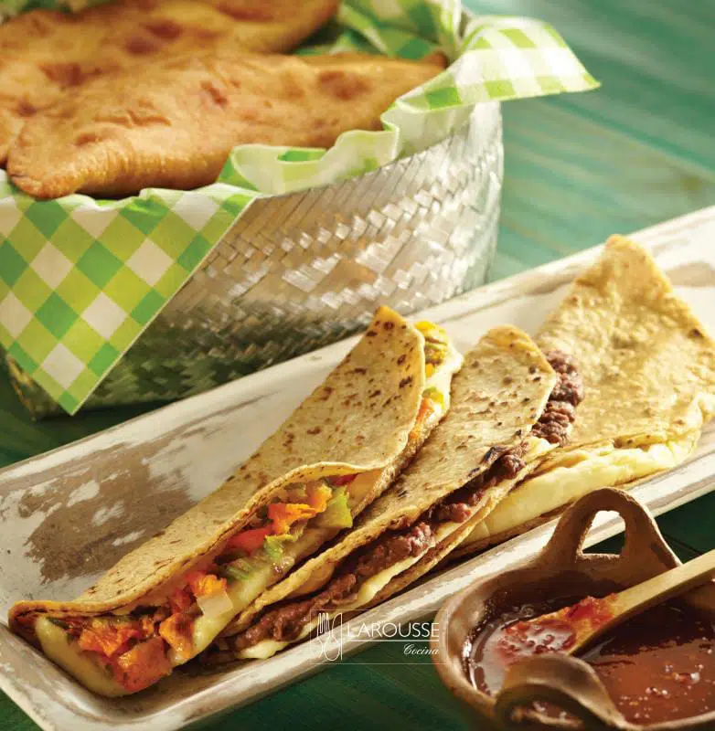
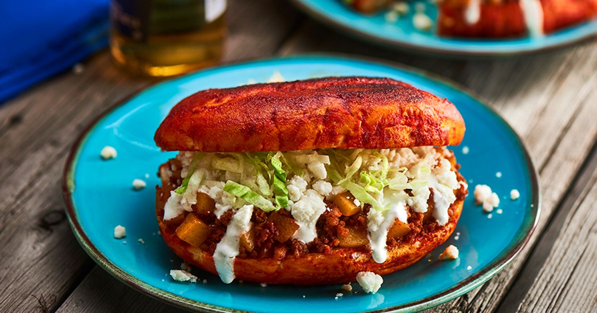
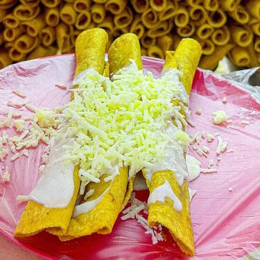
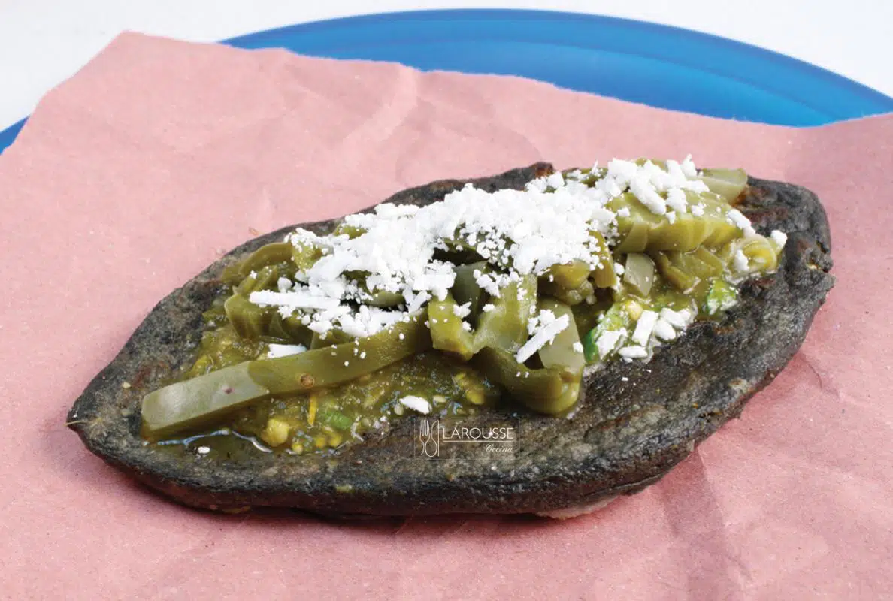
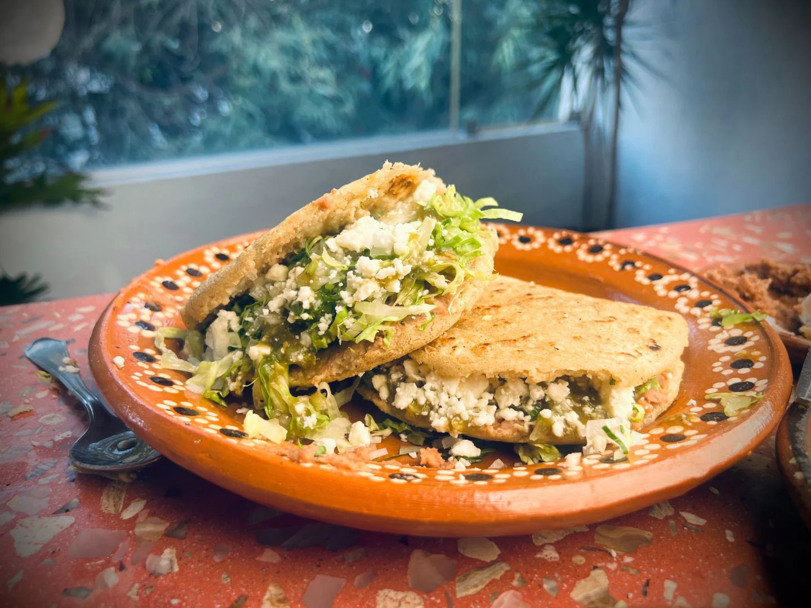

|
Quesadillas Preparado con Tortillas de maiz hechas a comal, con queso de relleno o con otros complementos al gusto, como pollo, flor de calabaza o huitlacoche. |  |
Costo de cada plato: $35 pesos. |
|---|---|---|
|
Pambazos Preparado con Teleras bañadas en salsa roja de chile guajillo dorado en aceite, rellenado con papa con chorizo, crema, queso y lechuga. |  |
Costo de cada plato: $80 pesos. |
|
Flautas rellenas de pollo Preparado con tortillas de maiz enrolladas, rellenas de carne de pollo deshebrado, freidas y acompañadas con crema, queso, lechuga y salsa. |  |
Costo de cada plato: $76 pesos. |
|
Tlacoyos Preparado con masa azul rellenada con requeson, frijoles o habas, freidas en comal y acompañadas con crema, queso, nopales al gusto y salsa. |  |
Costo de cada plato: $64 pesos. |
|
Gorditas rellenas de chicharon Preparado con masa amarilla rellena de chicharon de puerco, freida en comal y acompañada con crema, queso, nopales al gusto y salsa. |  |
Costo de cada plato: $40 pesos. |